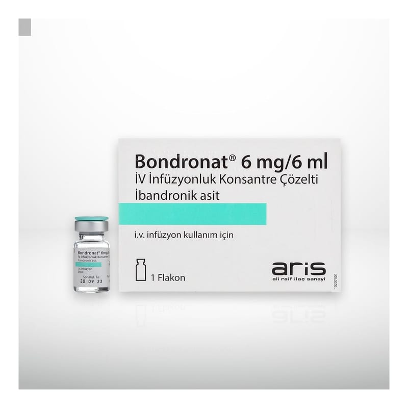

Bondronat 6 mg/6 ml IV İnfüzyonluk Konsantre Çözelti, 5 Adet

Ne için kullanılır
KT · Bölüm 1• BONDRONAT, etkin maddesi ibandronik asit olan infüzyonluk konsantre çözelti formundadır. Her bir Tip I cam flakon, 6 ml çözelti içinde 6 mg ibandronik asit içerir. Her kutuda 6 mg/6 ml’lik 1 ve 5 adet Tip I cam flakon bulunmaktadır.
• BONDRONAT’ın etkin maddesi ibandronik asit, bisfosfonatlar olarak bilinen ilaç grubuna dahildir. Kemiklerden artmış kalsiyum kaybını engeller (kemik yıkımı) ve ayrıca kanın sıvı kısmındaki (serum) artmış kalsiyum düzeylerini normale döndürür. Aynı zamanda kanser hücrelerinin kemiğe yayılması sonucu oluşan kemik rahatsızlıklarını ve kırıklarını engeller.
• BONDRONAT aşağıdaki durumlarda kullanılır: - Tümörler sonucu anormal (patolojik) olarak artmış serum kalsiyum seviyelerinin (hiperkalsemi) tedavisinde,
- Kanser hücreleri kemiğe yayılmış olan meme kanseri hastalarındaki iskelet ile ilgili bozuklukların (anormal kırıklar, ışın tedavisi ve ameliyatı gerektiren kemik rahatsızlıklarının) önlenmesinde.